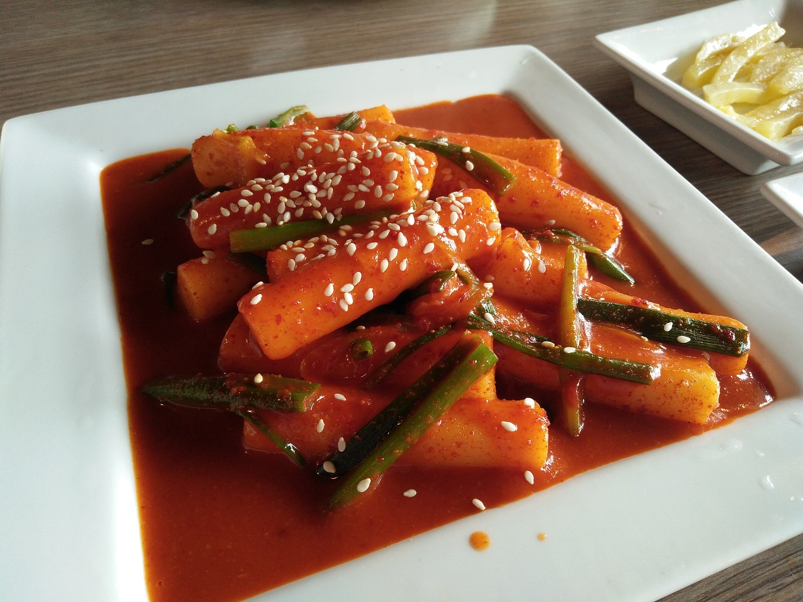

Home
Scottish Tablet
Kimchi Fried Rice
Tteokbokki

Description
Tteokbokki are chewy rice cakes cooked in either a sweet and spicy broth,
or a hot and spicy broth. It is a tradition Korean dish that can also be
found as a popular street food. During the time I spent in Korea I fell in
love with these delicious morsels and couldn't get enough of them. There
are many different types of tteokbokki, you can add pretty much anything
you want to it including, but not limited to: dumplings, or mandu,
cabbage, cheese, or ramen noodles. Many people eat just as it is.
Ingredients
- 1 pound of cylinder shaped rice cakes, bought or homemeade
- 4 cups of water
- 7 large sized dried anchovies(head and intestines removed)
- 6 x 8 in dried kelp
- 1/3 cup hot pepper paste (gochujang)
-
1 tbsp Korean hot pepper flakes (gochugaru aka Korean chili flakes)
- 1 tbsp sugar
- 3 green onions (scallions), cut into 3 inch long pieces
- 2 hard boiled eggs, shelled (optional)
- 1/2 pound fish cakes (optional)
Steps
- 1. Add the water, dried anchovies and dried kelp to a shallow pot or pan.
- 2. Boil for 15 minutes over medium high heat, uncovered.
- 3. Combine gochujang(hot pepper paste), gochugaru(hot pepper flakes), and sugar in a small bowl
- 4. Remove the anchovies and kelp from the pot and add the rice cakes, the mixture in the bowl, the green onion, and the optional fish cakes and eggs.
- 5. Stir the mixture gently until it starts to boil. Let simmer and keep stirring until the race cakes turn soft and the tteokbokki sauce thickens and looks shiny,
around 15 minutes or so. Add more water and continue stirring if the rice cakes are not soft enough.
- 6. Remove from the heat and serve hot. Leftovers are good for a few days if refrigerated.